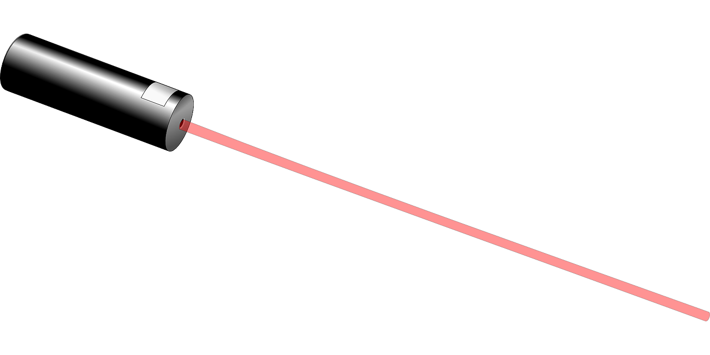

Atomic, molecular, and optical physics studies how light interacts with matter. By studying how light interacts with matter, such as with atoms and molecules, one can study the physical principles governing these objects. You can find some of the latest AMO research here. One of the best places to do this research is my alma mater, CU!
